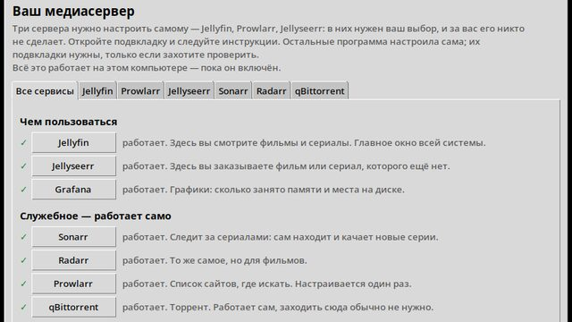

Home media server on k3s
Six media library services live in a k3s cluster, and one downloaded file installs them onto someone else's machine — no command line and no dependencies at all. The program brings the cluster up itself, maps volumes onto the folders the user picked and wires the services to each other over their APIs.
On every tag the pipeline brings up a real k3s and runs the installation with the same code that reaches the user. The release publishes exactly the artifact that passed the checks — nothing is rebuilt at that step.
k3sKustomizePythontkinterAnsibleGitHub Actions